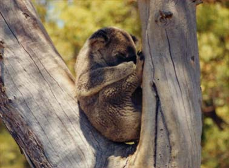

 さて家族の番になって、抱くのが嫌だったが初めに私が抱くことになった。係官がどのコアラにしようか 考えている時に既にボタボタは忘れ気味、いざ抱っこしたらあまりの可愛らしさでコアラに夢中になった。 赤ん坊が甘えるようにおとなしく腕の中に居てくれるのである。縫いぐるみを抱いている感覚である。こん なに可愛い動物とは全く思わなかった。私は動物が苦手であるが、コアラだけは別格であった。その後皆で コアラを交互に抱っこした。で、あのボタボタは？我々が抱っこしあっている間多分無かったと思うし、そんなこと完全に忘れていた。 コアラは夜行性動物ということを知らなかった、従って日中は眠くて動きが遅いのだが元々夜でも動きは 遅いみたいである。カンガルーも夜行性ということを知らなかった、その為に車の夜間走行特に日没後と日 の出前は危険である。後日談予定。 ２００１年９月２８日 記
|
 玄関に戻る前に戻る目次に戻る次に進む
玄関に戻る前に戻る目次に戻る次に進む